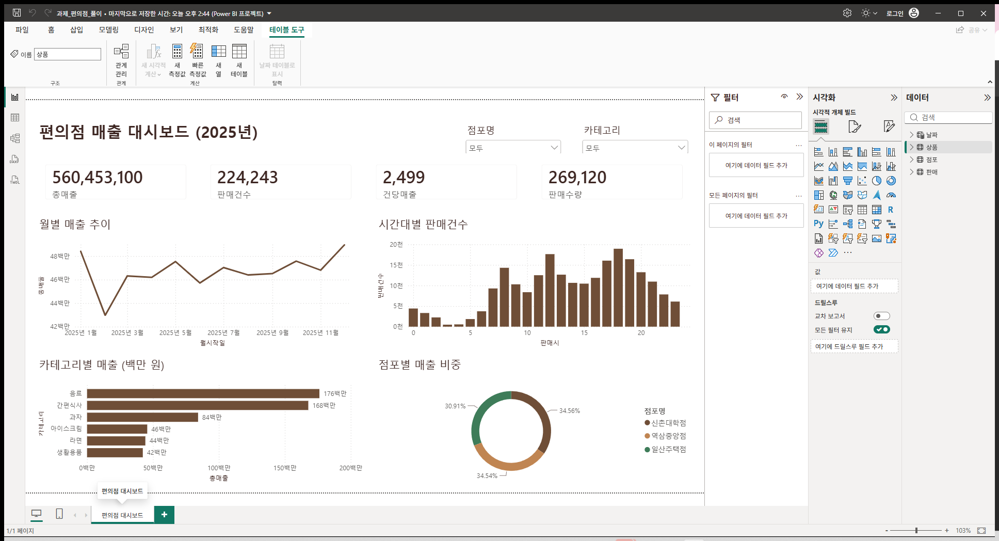

8장. 과제 - 편의점 매출 대시보드 혼자 만들기
학습 목표
- 1~7장에서 배운 순서를 새 데이터에 혼자 적용한다.
- 데이터를 보고 어떤 정리·관계·측정값·차트가 필요한지 스스로 정한다.
- 완성한 대시보드에서 찾은 내용을 문장으로 정리한다.
8-1. 과제 소개
동네 편의점 체인 세 곳의 2025년 1년치 판매 데이터다. 카페 데이터와 모양이 비슷하지만 열 이름과 내용이 조금 다르다. 교안을 다시 보며 혼자 대시보드를 완성해 보자. 막히면 8-4 의 단계별 힌트를 보고, 그래도 막히면 완성 파일 pbix\과제_편의점_풀이.pbix 를 연다.
| 파일 | 내용 |
|---|---|
편의점_판매.csv |
판매번호, 판매일자(날짜), 판매시(0~23), 점포코드, 상품코드, 수량, 판매금액 - 약 22만 줄 |
편의점_상품.xlsx (시트 상품) |
상품코드, 상품명, 카테고리, 가격 - 18개 상품, 6개 카테고리 |
편의점_점포.xlsx (시트 점포) |
점포코드, 점포명, 상권 - 역삼중앙점(오피스), 신촌대학점(대학가), 일산주택점(주거지) |
카페 데이터와 다른 점: 판매 표에 판매금액이 이미 있다 (수량 × 가격을 할 필요 없음). 줄 하나가 판매 한 건이므로 판매 건수는 행 수로 센다. 일부러 넣은 지저분한 값은 없다.
8-2. 만들어야 할 것
새 보고서(파일 → 새로 만들기)에서 시작해 한 페이지짜리 대시보드를 만든다.
- 세 파일을 불러온다. 판매일자가 날짜 형식인지 확인한다.
- 날짜 테이블(2025-01-01 ~ 2025-12-31)을 만들고 월시작일, 요일 열을 더한다.
- 관계 3개를 만든다.
- 측정값 4개: 총매출, 판매수량, 판매건수(행 수), 건당매출(총매출 ÷ 판매건수).
- 아래 시각적 개체를 배치한다.
| 개체 | 내용 |
|---|---|
| 제목 | 편의점 매출 대시보드 (2025년) |
| 슬라이서 2개 | 점포명, 카테고리 (드롭다운) |
| 카드 4개 | 총매출, 판매건수, 건당매출, 판매수량 (표시 단위 없음) |
| 꺾은선형 | 월별 매출 추이 (X축 월시작일) |
| 세로 막대형 | 시간대별 판매건수 (X축 판매시, 오름차순) |
| 가로 막대형 | 카테고리별 매출, 많은 순 (표시 단위 백만) |
| 도넛형 | 점포별 매출 비중 (총 퍼센트) |
- 하루커피 테마를 적용하고
내편의점.pbix로 저장한다.
8-3. 완성 예시

카드 값이 아래와 같으면 정답이다. (슬라이서는 모두 "모두")
| 측정값 | 값 |
|---|---|
| 총매출 | 560,453,100 |
| 판매건수 | 224,243 |
| 건당매출 | 2,499 |
| 판매수량 | 269,120 |
8-4. 단계별 힌트
① 불러오기 - 1장 1-3, 1-4. CSV 미리 보기에서 파일 원본 UTF-8 을 확인한다.
② 날짜 테이블 - 3장 3-4. 기간만 바꾼다.
날짜 = CALENDAR(DATE(2025, 1, 1), DATE(2025, 12, 31))
새 열 월시작일, 요일, 요일번호 는 3장과 똑같이 만들고, 날짜 테이블로 표시, 요일은 열 기준 정렬 → 요일번호.
③ 관계 - 3장 3-3. 상품[상품코드] → 판매[상품코드], 점포[점포코드] → 판매[점포코드], 날짜[Date] → 판매[판매일자].
④ 측정값 - 4장. 판매 테이블을 고르고 새 측정값.
총매출 = SUM('판매'[판매금액])
판매수량 = SUM('판매'[수량])
판매건수 = COUNTROWS('판매')
건당매출 = DIVIDE([총매출], [판매건수])
COUNTROWS(테이블) 은 테이블의 행 수를 센다. 카페에서는 주문 하나가 여러 줄이라 DISTINCTCOUNT(주문번호) 를 썼지만, 편의점 데이터는 한 줄이 한 건이라 행 수가 곧 건수다.
⑤ 차트·슬라이서·서식 - 5·6장. 카테고리별 매출 정렬은 … → 축 정렬 → 총매출 → 내림차순.
8-5. 분석 문장 쓰기
완성한 대시보드로 아래 질문에 답을 문장으로 써 보자. 풀이는 부록 C 에 있다.
- 매출이 가장 많은 카테고리와 가장 적은 카테고리는?
- 세 점포 중 매출 비중이 가장 큰 곳은? 점포마다 바쁜 시간대가 어떻게 다른가? (점포명 슬라이서를 하나씩 골라 시간대별 판매건수를 비교)
- 월별 매출 추이에서 매출이 가장 높은 달은? 그 달에 무엇이 많이 팔렸을까? (카테고리 슬라이서를 바꿔 가며 확인)
- 아이스크림 과 생활용품(핫팩이 들어 있다) 카테고리를 각각 골랐을 때 월별 추이는 어떻게 다른가?